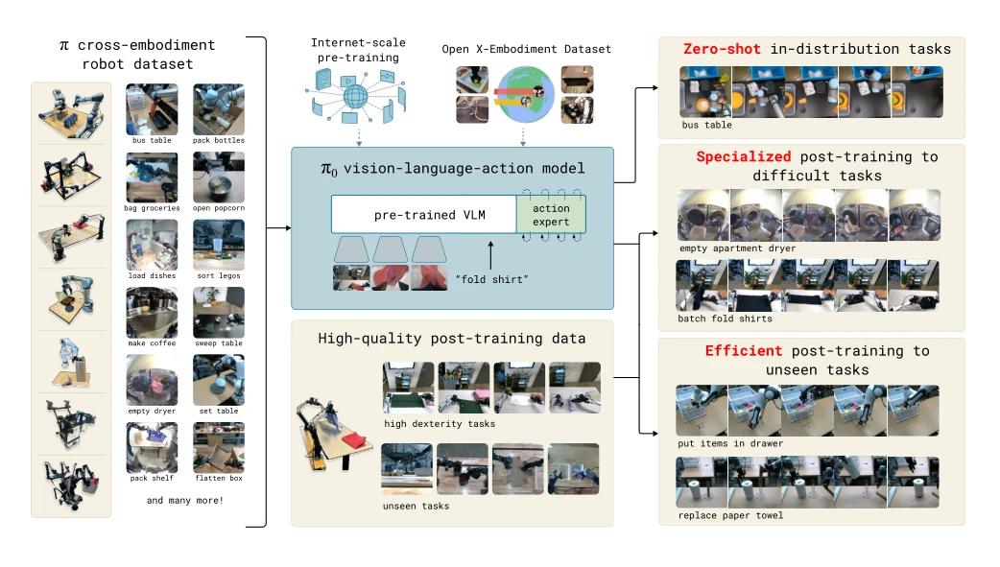
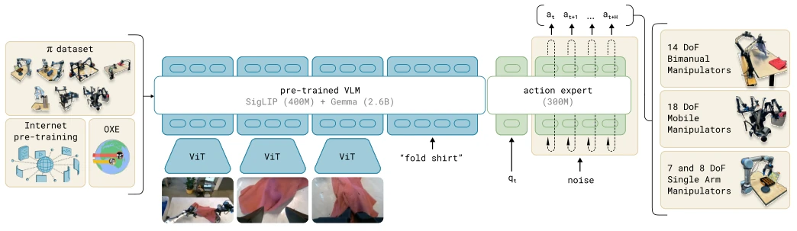
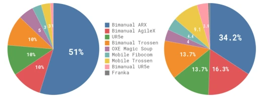
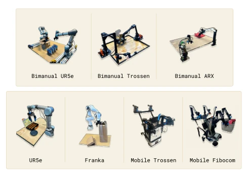
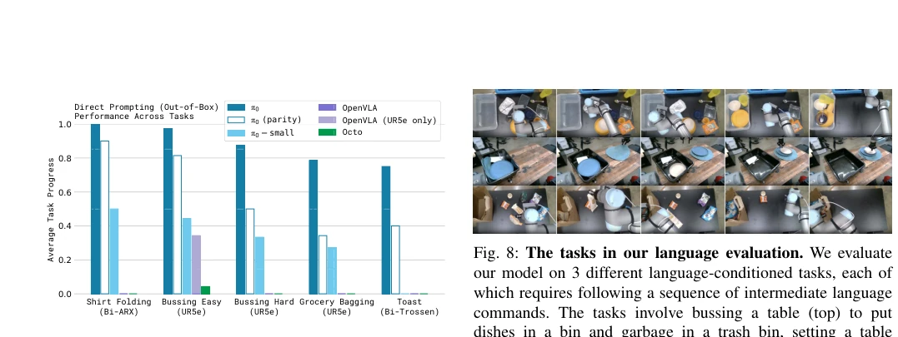
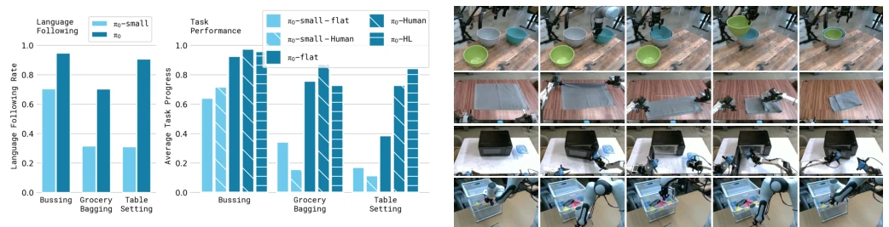
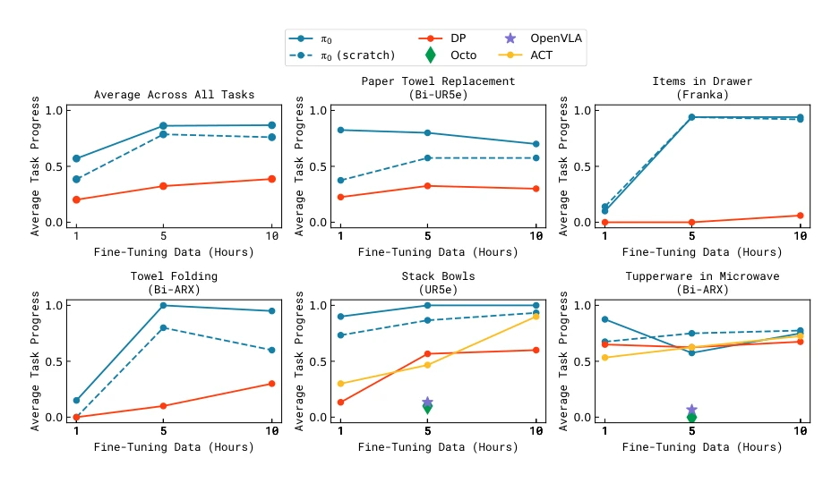
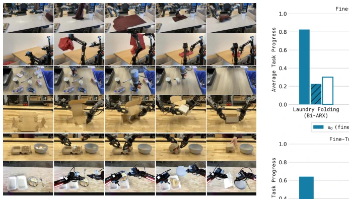
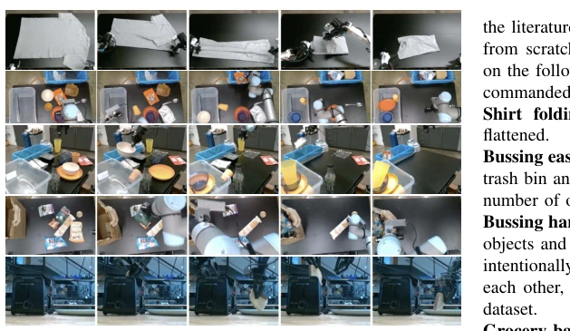
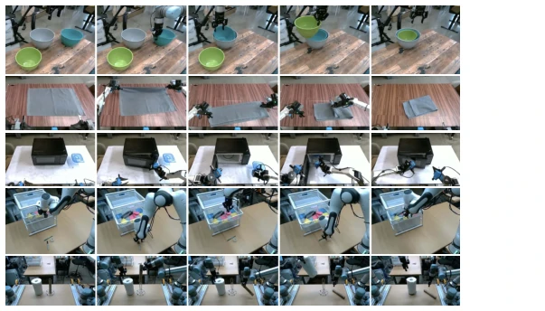

This paper attempts to solve the longstanding and difficult problems in robot control using "large model" thinking. π0 is essentially a Flow Matching model wearing a VLA guise; its core selling point is forcibly combining internet semantic knowledge (VLM) and continuous action generation (Flow). Although claimed to be "general", a close look at the experiments reveals it still relies on fine-tuning for specific scenarios. The most ironic part is that it uses 10,000 hours of data for pretraining, resulting in dominating small models on simple tasks, but still requires a large amount of high-quality data for fine-tuning on complex tasks; does this count as another form of "overfitting" for "large models"? However, the 50Hz high-frequency control does indeed solve the pain point of previous VLA action discretization, which is worth affirming. Additionally, cross-embodiment training allows one model to control different robots, which is very attractive in engineering, but the computational cost is likely not low. Overall, this is a solid attempt in both architecture and engineering; although it hasn't completely escaped the "large model" hype, it has indeed taken a big step forward in the field of dexterous manipulation.
Robot learning has long been plagued by data scarcity and poor generalization capabilities. Existing VLA models such as RT-2 [7] and OpenVLA [24] mostly adopt autoregressive discrete actions, making it difficult to handle high-frequency continuous control, resulting in poor performance in dexterous manipulation (such as folding clothes). Although diffusion policies (Diffusion Policy [9]) can generate continuous actions, they lack semantic understanding. π0 aims to build a robot foundation model, inheriting internet knowledge through large-scale pretraining to address data insufficiency and robustness issues. However, existing methods often perform well on specific tasks but cannot transfer across robot embodiments (cross-embodiment), and lack deep understanding of complex physical interactions. Furthermore, training on small-scale data makes it difficult to cover the diversity of the real world, causing models to fail easily when facing unseen objects or environments. Therefore, a foundational architecture that can fuse large-scale semantic knowledge with continuous physical control is needed to cope with long-tail distributions and complex interactions in the real world.

Fig. 1: Our generalist robot policy uses a pre-trained vision-language model (VLM) backbone, as well as a diverse cross- embodiment dataset with a variety of dexterous manipulation tasks. The model is adapted to robot control by adding a separate action expert that produces continuous actions via flow matching, enabling precise and fluent manipulation skills. The model can then be used directly to perform tasks based on a prompt, or fine-tuned on high-quality data to enable complex multi-stage tasks, such as folding multiple articles of laundry or assembling a box.

Fig. 3: Overview of our framework. We start with a pre-training mixture, which consists of both our own dexterous manipulation datasets and open-source data. We use this mixture to train our flow matching VLA model, which consists of a larger VLM backbone and a smaller action expert for processing robot states and actions. The VLM backbone weights are initialized from PaliGemma [5], providing representations learned from large-scale Internet pre-training. The resulting π0 model can be used to control multiple robot embodiments with differing action spaces to accomplish a wide variety of tasks.
The overall framework is divided into two stages: pretraining and fine-tuning. In the pretraining stage, open-source data (OXE [10]) and proprietary dexterous manipulation data are mixed, using PaliGemma [5] as the VLM backbone to inherit semantic knowledge. The innovation lies in introducing an independent "Action Expert", utilizing Conditional Flow Matching to generate continuous action chunks (Action Chunk), supporting control frequencies up to 50Hz. Model inputs include multi-view images, language instructions, and proprioceptive states, with outputs being future action sequences. During training, action tokens use flow matching loss, while language/image tokens use cross-entropy loss. Additionally, cross-embodiment training is adopted to unify action space dimensions for different robots (single-arm, dual-arm, mobile base), handling differences through zero-padding. The fine-tuning stage uses high-quality data to further optimize the policy's fluency and robustness for specific tasks. The Action Expert uses independent weights, separated from the VLM backbone, which is similar to a Mixture of Experts (MoE) structure, helping the model better handle robot-specific state and action distributions, avoiding interference from language tasks on action generation accuracy.

Fig. 4: Overview of our dataset: The pre-training mixture consists of a subset of OXE [10] and the π dataset. We use a subset of OXE, which we refer to as OXE Magic Soup [24]. The right figure illustrates the weight of the different datasets in the pre-training mixture. The left figure illustrates their relative sizes as measured by the number of steps.

Fig. 5: The robots used in our experiments. These include single and dual-arm manipulators with 6-DoF and 7-DoF arms, as well as holonomic and nonholonomic mobile manipulators. π0 is trained jointly on all of these platforms.
The dataset contains 7 robot configurations, 68 tasks, totaling over 10,000 hours of demonstration data. Baselines include OpenVLA [24], Octo [50], ACT [57], and Diffusion Policy [9]. Evaluations cover out-of-the-box (Out-of-box), language instruction following, and complex multi-stage tasks (such as laundry folding). Results show that π0 significantly outperforms OpenVLA and Octo on out-of-box tasks, especially in tasks requiring dexterous manipulation. Fine-tuning experiments show that even with small amounts of data (1-5 hours), the pre-trained model can outperform baselines trained from scratch. In complex tasks such as laundry folding, combining with a high-level strategy (High-level VLM) can achieve continuous operation lasting up to 20 minutes. Ablation experiments confirm the key role of VLM initialization and flow matching architecture in language following and action accuracy. Notably, even the "parity" version with limited computation exceeds baselines, proving the superiority of the architectural design rather than simply relying on data scale.

Fig. 7: Out-of-box evaluation results: We evaluate π0 trained for the full 700k steps, a version trained for 160k steps that matches the number of updates for baseline models, π0-small, and three baselines: OpenVLA and Octo trained on all of our data, and OpenVLA trained only on the UR5e tasks (which we found to work better on UR5e tasks). Across all tasks and all comparisons, even the “parity” version of our model outperforms all baselines, and the full version of our model achieves the best results by a large margin.

Fig. 9: Language evaluation. We compare “flat” versions of our policies, −flat, which receive only the overall task com- mand (e.g., “bag the groceries”) with a method that receives intermediate commands from a human expert, −human, or a high-level VLM policy, −HL. We also compare our model to a small non-VLM variant under the “expert” condition, π0 and π0-small, in terms of language following accuracy. The results show a significant improvement with π0 from intermediate language commands provided by a human expert and to a lesser degree by an autonomous high-level policy. Notably, due to π0-small’s limited language following ability, overall it does not gain with the addition of a high-level expert.

Fig. 11: Fine-tuning with varying amounts of data. π0 can learn some easier tasks even with smaller amounts of data, and the pre-trained model often attains a larger improvement over the model trained from scratch.

Fig. 12: We evaluate a range of complex and temporally extended tasks. This includes: folding laundry from a bin with a stationary (a) or mobile (b) robot, bussing a real lunch table (c), assembling a box (d), packing eggs into a carton (e), and packing food into a to-go box (f). These tasks require combining dozens of individual behaviors, such as grasping, stacking, folding, and flattening, generalization to a huge variety of object configurations, and complex physical properties, such as deformable objects or flexible cardboard.
其他图片Other Figures

Fig. 6: Out-of-box evaluation tasks: To evaluate our base model, we run it after pre-training on five tasks: shirt folding, bussing easy, bussing hard, grocery bagging, and toast out of toaster. The tasks require a combination of dexterous manipulation, multi-stage behaviors, and semantic recognition.

Fig. 10: Fine-tuning evaluation tasks: We fine-tune our model to a variety of downstream tasks that are distinct from the tasks seen in pre-training. Our tasks represent a range of similarity from the pre-training tasks, with tasks that are most similar to pre-training (stack bowls and towel folding), a task that introduces an unseen new element (a microwave), and tasks that require new motions and new object types (Franka items in drawer and paper towel replacement).